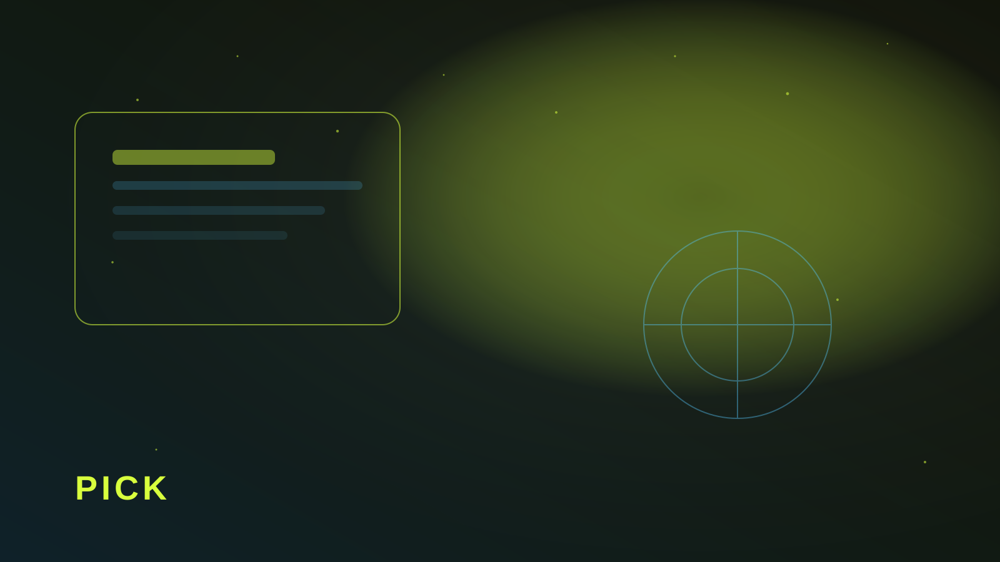

Статика, CMS или конструктор
Статический HTML — быстрее всего, дёшевый хостинг, идеален для лендинга без регулярных правок от маркетинга. Headless CMS — если контент меняет не разработчик. Конструктор — ок для прототипа, но часто упирается в интеграции и скорость.
Выбирайте не по моде, а по тому, кто будет обновлять сайт через полгода и какие интеграции нужны в первый месяц.

Короткая матрица решения
- Лендинг + редкие правки — статика.
- Частые тексты/акции без разработчика — CMS.
- Проверка гипотезы за дни — конструктор, с планом миграции.
Если уже ясны CRM, платежи и кастомная логика — закладывайте их в стек сразу. Перенос «потом» почти всегда дороже, чем кажется на старте.